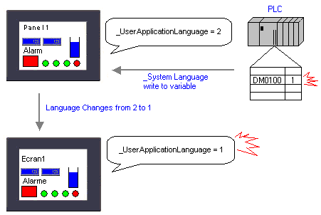

|
|
|
|
|
|
|
|
Not all system variables can be used with connected equipment, see the table below for more information. Use the system variable properties to associate device addresses with system variables.
In the following example, when there is a change in value in the PLC device address that manages the user language, the target machine's _UserApplicationLanguage variable value also changes, and causes the language to switch.

Reading from the equipment to a system variable can be done using external variables. By assigning these external variables to system variables, you can use equipment to update system variable values.
Equipment value --> external variable --> system variable
|
System Variable |
Description |
|
_Brightness |
_Brightness uses the assigned external variable to change the target machine's brightness settings from the PLC. See Section 20.4.3, Adjusting Brightness and Contrast from Equipment. |
|
_Contrast |
_Contrast uses the assigned external variable to change the target machine's contrast settings from the PLC. See Section 20.4.3, Adjusting Brightness and Contrast from Equipment. |
|
_CurPanelID |
_CurPanelID uses the assigned variable to change the panel from the PLC to the target machine. |
|
_DIOPort.DOut0 |
_DIOPort.DOut0 uses the assigned external variable to turn the DIO BUZZ port ON and OFF. For information on DIO Ports, see Section 24.6, DIO Ports. |
|
_InputStatus |
_InputStatus writes the current input status of the target machine to the PLC. You cannot use the PLC to change the input status. See Section 11.9.8, Monitoring Input Status from Connected Equipment. |
|
_SystemLanguage |
_SystemLanguage uses the assigned variable's value in the PLC to change the system language in the target machine. |
|
_TouchField |
Integer variable that opens the input mode of a data display object using scripts instead of having to touch the object first. For more information on Field IDs, see Section 11.2.2, Input Mode Tab. |
|
_UserApplicationLanguage |
_UserApplicationLanguage uses the assigned variable's value in the PLC to change the user-created project language in the target machine. |
|
_UserLevel |
_UserLevel uses the assigned variable's value in PLC to change logged in user's Security Level. See Section 4.8.2.1, Protecting Panels and Parts from Unauthorized Users. |
Create an external variable. See Section 6.2.2, Creating Variables.
In the Variable Editor, click the System Variable icon to display the system variables in the Variable Editor.
Right-click one of the system variables you can use on connected equipment, and select Properties to access the system variable's properties.
In the system variable's properties, click the Read From Variable and Write To Variable check boxes, click the ellipsis buttons to access the Variables List dialog box, select the variable to Read from and Write to and click OK. The associated variable appears in the selected field.

You cannot set the same variable in the Read From and Write To fields.
You cannot use system variables or a non-integer variable in the Read From and Write To fields.
Change panel and change language operations are not possible if the value in the Read From variable does not actually change. This can occur if the values of the system variable and corresponding Read From variable are not the same.
The _InputStatus system variable supports Write To operations only. You cannot define the input status from a variable. To change the input status of specific numeric and string displays, select Use Input Trigger. See Section 11.2.5, Advanced Tab.